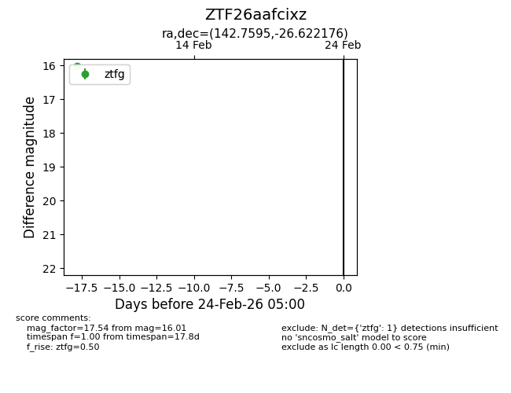
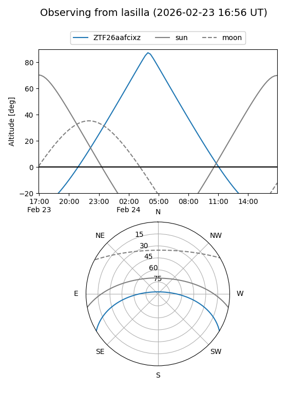
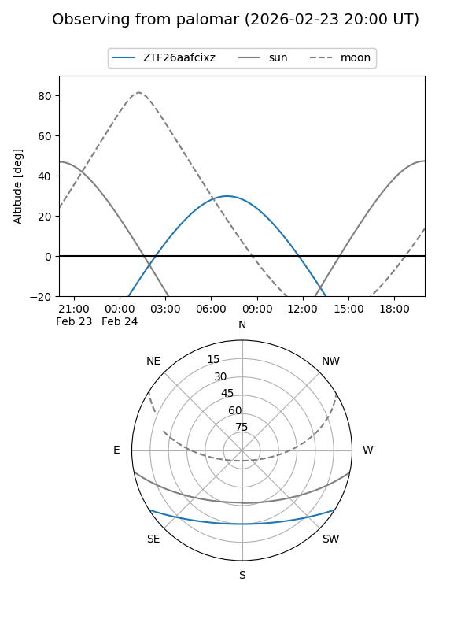

ZTF26aafcixz
Target ZTF26aafcixz at 2026-02-24 09:08
Aliases and brokers:
FINK: link
Lasair: link
ALeRCE: link
alt names
ZTF26aafcixz (ztf,fink_ztf)
Coordinates:
equatorial (ra, dec) = 142.7595,-26.62218
equatorial (HMS+DMS) = 09:31:02.28,-26:37:19.83
galactic (l, b) = (256.8449,+17.82011)
Flags:
Photometry:
last ztfg=16.01
1 ztfg detections
Lightcurve

Visibility


Additional plots